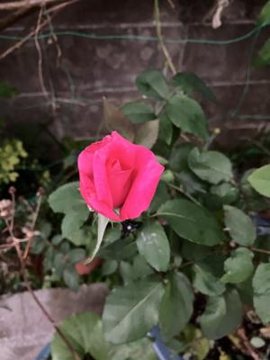
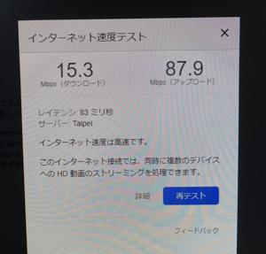
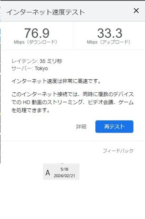

うるがいの話 ある日
最新: 実技の研修始まる【うるがいの話 ある日】とは 一日だけのプログです
『うるがいの話』の最新一日だけのプログで、通信料が少なく経済的だ。カニの画像をクリックすると全ての日付が載る『うるがいの話』サイトを表示します
|
|
【うるがいの話】 うるがい(ｳﾙｶﾞｲ urugai)とは、『もずくがに』の名前でとても大きくなります。 |
|---|---|
|
|
【カミマヤーの話】 猫のことを方言でマヤーといいます。カミマヤー（kamimayaa）とは、神の猫のことです。 |
|
【たながぁの音楽】 たながぁ（ﾀﾅｶﾞｰ tanagaa）とは手長えびのことで、何種類かあり大きいのは車 エビぐらいになります。 |

|
【ぶながぁの話】 ぶながぁ(ﾌﾞﾅｶﾞｰ bunagaa)とは、赤い髪の毛、赤い身体、そして身長は１ｍ２０ｃｍ ぐらい、川の蟹を食べているの目撃された。場所は沖縄県国頭郡大宜味村のと ある村僕の隣近所に住んでいる爺さんから、聞いた話です。 |
|
|
【ギーマの話】 ギーマ(giima)とは、山原の里山に咲くスズランに似た、 花を付けます。実は食べられます、 気が付くと口の周りが紫になっています。 |
2024年02月21日 (水）実技の研修始まる
15:36
  
これまではひたすら動画を視聴する研修だったが、先行している人達は実際
に手でコードを打ち込み確認する研修に着手し始めた。昨日、午後に研修室
にいくとこれまでと違い、隣同志の老若ペアでガチャガチャ、パソコンを見
ながら会話している。ん？、コッソリ除くとプログラムのコードがあった。
研修に指示されたダウンロードを、ネットから落とし込み、解凍してコード
をいじるものだった。ホー、と私もさっそく彼らが研修している講義をやっ
てみる。ウン、指示されたダウンロードページから応答が無いと怒られた。
【注意】
・ 本手順は、2023年4月時点のものです。
Ⅰ. All-In-One-Eclipseのダウンロード
◆ダウンロード先: https://mergedoc.osdn.jp/ ←ここ！
1. ダウンロード先にGoogle Chromeからアクセスしてください。
2. ページ中央あたりにある「旧バージョンを表示」をクリックします。
3. 「Eclipse 2020」をクリックします。
4. Java列内にある64bit Full Editionの「Download」ボタンをクリックし
ます。
5. 自動でダウンロードが開始されます。ダウンロードされるファイル名は
「pleiades-2020-12-java-win-64bit-jre_20201222.zip」です。
6. ダウンロード完了後、ダウンロードフォルダーに「pleiades-2020-12-
java-win-64bit-jre_20201222.zip」があることを確認してください。
ダウンロードしたファイルは、［Cドライブ］-［setup］に移動させてく
ださい。
家に帰って、調べたら、どうやらサイトが変わったようだ。で、代替のサイ
トからダウンロードしたら、遅い！、ので寝た。ネット回線が空いている早
朝、実行した１時間でダウンロード（１．８Ｇ）できた。フムフム、かれら
はどうやってダウンロードしたのだろうか？。研修室からだったら、３時間
ぐらい？かな。それにしても、去年の手順だがもう使えないとは。ちなみに
よる１０時のダウンロードの回線速度は、１５．３Ｍｂｐｓ、早朝５時の場
合は、７６．９Ｍｂｐｓ（約５倍速い）。
１５時３０分 ビットコインの総資産 ￥２２、５８３（↓１３８）